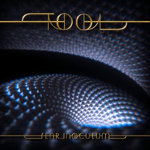

Discography - Latest 3 Studio Albums
- Lateralus - Released: May 15, 2001 (US)
- "The Grudge"
- "Eon Blue Apocalypse" (instrumental)
- "The Patient"
- "Mantra" (instrumental)
- "Schism"
- "Parabol"
- "Parabola"
- "Ticks & Leeches"
- "Lateralus"
- "Disposition"
- "Reflection"
- "Triad" (instrumental – song ends at 6:32, before 2:14 of silence)
- "Faaip de Oiad"
- 10,000 Days - Released: May 2, 2006 (US)
- "Vicarious"
- "Jambi"
- "Wings for Marie (Pt 1)"
- "10,000 Days (Wings Pt 2)"
- "The Pot"
- "Lipan Conjuring"
- "Lost Keys (Blame Hofmann)"
- "Rosetta Stoned"
- "Intension"
- "Right in Two"
- "Viginti Tres"
- Fear Inoculum - Released: August 30, 2019
- "Fear Inoculum"
- "Pneuma"
- "Litanie contre la peur"
- "Invincible"
- "Legion Inoculant"
- "Descending"
- "Culling Voices"
- "Chocolate Chip Trip"
- "7empest"
- "Mockingbeat"

Track Listing

Track Listing
